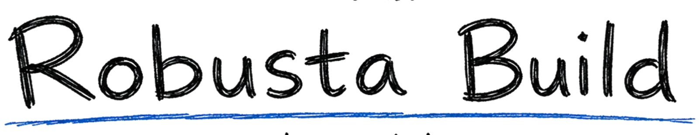
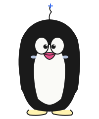
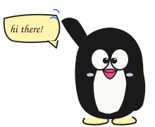

idempotency keys: a love letter
distributed systems

small team. long memory. for high-stakes systems where architecture, reliability, and the next engineer all matter.

we read your code, your incidents, and your last 6 months of prs. you get a 30-page memo with a ranked list of risks and a plan.
we sit inside your team — pull rotation, code review, design docs, on-call. we leave you with a smaller backlog and an upgraded bench.
you have one piece that's holding the rest hostage. we replace it without rewriting the world. yes, postgres still works.

first call is 30 minutes, no slides. tell us what hurts. we'll tell you whether we're the right people to help.